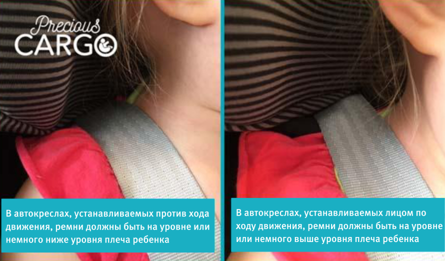
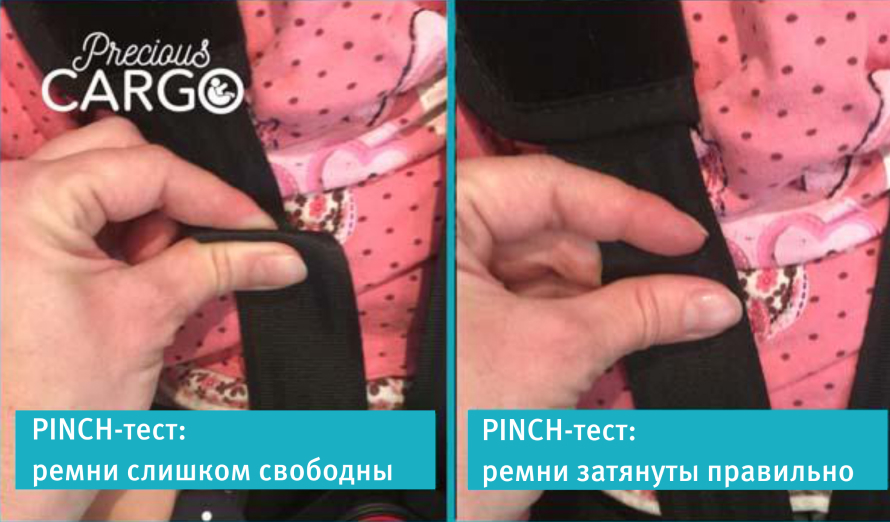
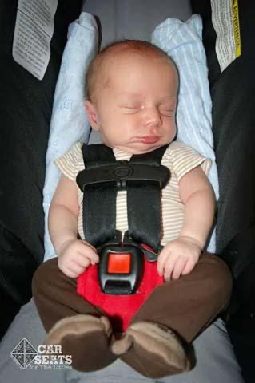

Мнение эксперта
Мария Григорьева
Консультант по сну, детский невролог. Мама двоих детей.
«Подготовка ко сну начинается с пробуждения. Если ребенок как следует не подвигается после сна, не выпустит накопившуюся энергию, ему все равно нужно будет это сделать, и веселиться ребенок будет перед сном. Прыжки и крики под громкую музыку в течение активного бодрствования (включите любимых исполнителей, покричите вместе) помогут ему снять напряжение. А перед сном аудиалу можно негромко включить аудио-сказку или спокойную музыку».
1.Убедитесь, что ремни автокресла расположены на правильной высоте
В креслах, установленных против хода движения, ремни должны быть на уровне плеча ребёнка или чуть ниже. В креслах, установленных по ходу движения, ремни должны быть на уровне плеча или немного выше.

2. Крепко затягивайте ремни автокресла
Слишком свободные ремни позволяют ребёнку завалиться вперед. Правильно затянутые ремни поддерживают ребёнка в нужном положении – чтобы ничто не перекрывало его дыхательные пути. Слишком свободные ремни опасны ещё и тем, что под ремень может попасть голова или шея, это может привести к удушению. Исследование, приведенное в журнале Pediatrics, показало, что 52% всех не связанных с авариями случаев смерти, о которых стало известно комиссии по безопасности потребительских товаров между 2004 и 2008 гг., были связаны с удушением от слишком свободных ремней.

3. Не используйте подушки и другие приспособления для поддержки головы
Не используйте подушки, чтобы зафиксировать положение головы ребёнка. Малыш может повернуть голову, уткнуться в мягкую подушку носом и задохнуться. Если ребёнку необходима дополнительная боковая поддержка, возможно использование плотно свернутых пледов, заправленных под бока ребёнка после его пристегивания. Обратите внимание: нагрудные зажимы могут использоваться только на автокреслах производства США и не являются разрешенными или безопасными для использования на европейских автокреслах.

4. Установите автокресло без базы
Иногда использование базы для автокресла увеличивает его наклон и как следствие риск того, что ребёнок завалится вперед. Попробуйте установить автокресло без базы, чтобы увидеть, дает ли это лучший угол наклона. Следуйте инструкции по установке автокресла с помощью автомобильного ремня безопасности.
5. Делайте регулярные перерывы
Исследования показали: чем дольше ребёнок находится в автокресле, тем ниже содержание кислорода в его крови.
Согласно рекомендациям многих специалистов, дети младше 4 недель должны непрерывно находиться в автокресле не более 30 минут, а дети старше 4 недель – не более 2 часов.
В случае долгой дороги делайте регулярные остановки. Вынимайте малыша из автокресла, чтобы он мог размяться.
6. Используйте автокресло только в машине
Угол наклона спинки автокресел рассчитан таким образом, чтобы дыхательные пути младенца не перекрывались. Как бы ни была заманчива идея вытащить ребёнка из машины в автокресле, чтобы он доспал в нём, это опасно. Не рекомендуется использовать автокресло в качестве коляски в течение длительного времени. Особенно опасно ставить автокресло со спящим ребёнком на пол, на кровать, диван или стол, потому что в этом случае наряду с риском позиционной асфиксии возникает риск падения.
7. Регулярно проверяйте ребёнка
Если это возможно, пусть рядом с малышом на заднем сидении находится взрослый, чтобы контролировать положение шеи и головы ребёнка. Если такой возможности нет, установите прошедшее краш-тест детское зеркало, чтобы следить за ребёнком и его состоянием.
8. Изучите инструкцию к автокреслу
Специалисты Journal of Pediatrics, изучив случаи гибели детей в автокреслах, пришли к выводу, что большинства трагедий можно было избежать, если бы автокресло использовалось согласно инструкции и взрослые контролировали состояние ребёнка.
Выводы: что могут сделать консультанты по сну BabySleepConsult (и другие специалисты, работающие с родителями малышей первого года жизни)
Информировать родителей о правилах сна ребёнка в машине:
1. Дети младше 4 недель должны находиться в автокресле непрерывно не более 30 минут, дети старше 4 недель – не более 2 часов.
2. Автокресло не повышает риск внезапной смерти, если оно находится в машине и ребёнок правильно пристегнут в соответствии с инструкцией. Не следует использовать автокресло в качестве коляски или места дня сна в течение длительного времени. Опасно ставить автокресло со спящим ребёнком на пол, на кровать, на диван или на стол, т. к. при этом наряду с риском позиционной асфиксии возникает риск падения.
3. В зоне наибольшего риска: дети младше 2 месяцев, недоношенные, маловесные, со сниженным мышечным тонусом, с проблемами с дыханием.
4. Позиционная асфиксия может возникнуть в любой ситуации, когда тело ребёнка ограничено в позиции, затрудняющей дыхание: в автокресле, стульчике-шезлонге, слинге/переноске, детских качелях. По этой причине массово отзывают некоторые модели люлек-стульчиков (inclined sleepers), предназначенных для укладывания спать ребёнка с рождения.
5. Самое безопасное место для сна ребёнка – кроватка с ровным матрасом.
BabySleep связался с Джулией Монсон, автором оригинальной публикации, и получил её разрешение на перевод этой статьи и инфографики.
Джулия Монсон — эрготерапевт из ЮАР, 13 лет занимается реабилитацией пострадавших в дорожно-транспортных происшествиях. Будучи мамой троих детей и ежедневно наблюдая в своей работе последствия небрежности на дорогах, Джулия понимает всю важность автокресел, их правильного и безопасного использования.


Комментарии
Оставить комментарийЗдравствуйте! Спасибо за ваш труд! Мне тоже нужна ваша помощь.Ребёнку 5 лет, ходит в сад, в саду не спит, тихий час с 13 до 15. Ночью засыпает долго, не важно во сколько уложить, раньше 22-22.30, иногда 23.00 не засыпает, но спит всегда крепко до утра, с утра тяжело поднимается.
Бужу в 8.00. Получается, что за ночь он спит всего 9-10 часов. Я сама взрослый 30-летний человек сплю практически столько же: Укладываю спать в одной комнате с дочкой, ей 2,5, засыпают одновременно, но она днём спит долго и добирает своё.
Подскажите, пожалуйста. Ребенку 2 месяца. Кормлю сцеженным молоком раз в 3 часа, от груди отказ. С рождения сформировалась очень сильная ассоциация на сон: укачивание в коконе на фитболе. В настоящий момент дневные сны ребенок спит только по качании на мяче, при "остановке". Не знаю уходит ли дочь в глубокую фазу сна при этом и являются ли они эффективны.
В обед выхожу на прогулку с коляской, дочь спит в коляске 3-4 часа, также просыпаясь при "остановке". Ночью также частые просыпания, так как не может соединить 2 фазы сна без качки...Пробовала убрать качания, положить в кроватку и гладить, шикать, но ребенок вопит, багровеет, просто истерика навзрыд больше получаса, потом от изнеможения засыпает... Подскажите, пожалуйста, хватает ли сна при настоящем раскладе или такие сны неэффективны?
Подскажите, пожалуйста. Ребенку 2 месяца. Кормлю сцеженным молоком раз в 3 часа, от груди отказ. С рождения сформировалась очень сильная ассоциация на сон: укачивание в коконе на фитболе. В настоящий момент дневные сны ребенок спит только по качании на мяче, при "остановке". Не знаю уходит ли дочь в глубокую фазу сна при этом и являются ли они эффективны.
В обед выхожу на прогулку с коляской, дочь спит в коляске 3-4 часа, также просыпаясь при "остановке". Ночью также частые просыпания, так как не может соединить 2 фазы сна без качки...Пробовала убрать качания, положить в кроватку и гладить, шикать, но ребенок вопит, багровеет, просто истерика навзрыд больше получаса, потом от изнеможения засыпает... Подскажите, пожалуйста, хватает ли сна при настоящем раскладе или такие сны неэффективны?
Здравствуйте! Спасибо за ваш труд! Мне тоже нужна ваша помощь.Ребёнку 5 лет, ходит в сад, в саду не спит, тихий час с 13 до 15. Ночью засыпает долго, не важно во сколько уложить, раньше 22-22.30, иногда 23.00 не засыпает, но спит всегда крепко до утра, с утра тяжело поднимается.
Бужу в 8.00. Получается, что за ночь он спит всего 9-10 часов. Я сама взрослый 30-летний человек сплю практически столько же: Укладываю спать в одной комнате с дочкой, ей 2,5, засыпают одновременно, но она днём спит долго и добирает своё.